Base validada no APK 0.5.451
Season 3: Conquest
O guia atual de Crimson Desert: novos Palmons, Mega Evolution, mapa, recursos e a ordem de investimento para não desperdiçar uma semana de season.
O que entrou de verdade
O APK novo inclui sistema S03/Desert, Desert Tech, Pyramid Battle, Warzone/King City, Palmite/Aura, montaria trial, Boss e 6 novos Palmons UR. As imagens abaixo foram exportadas diretamente dele.
6Palmons UR novos
12formas Mega no cliente
S03configs Desert/Conquest
0.5.451APK analisado
Importante: ranking de Conquest não substitui automaticamente seu time atual. Ele indica em quem investir quando você obtiver o Palmon e conseguir evoluir, não uma ordem de gastar todos os recursos hoje.
Novos Palmons: ranking Conquest
Tier de combate atual: cruzamento do APK 0.5.451 com guias atualizados. “Melhor” varia com evolução, estrelas, elemento do squad e investimento; por isso cada carta informa o emprego, não só uma letra.
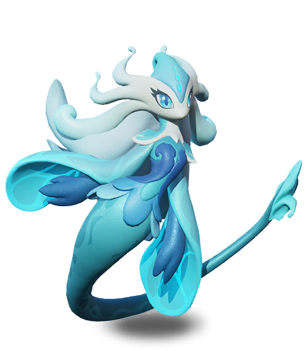
#1 Sylphira S+
ÁguaDPS / frontCarry Água muito completo: dano, sobrevivência e uso na frente quando o elenco pede. Mega Abysphira é a prioridade máxima se você for construir Água.
Foco: evolução + DPS Água; Belligerent é o perk ofensivo mais citado.
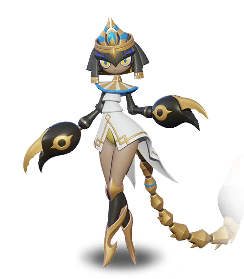
#2 Scorphelia S / S+ Mega
TerraDPS / toxinExplosão de toxina e buff de Final Attack para aliados Terra a cada Fúria. Exige evolução para o teto de dano, mas é o novo núcleo Earth.
Foco: Mega Scorphelias e time Terra; use no fundo protegido.
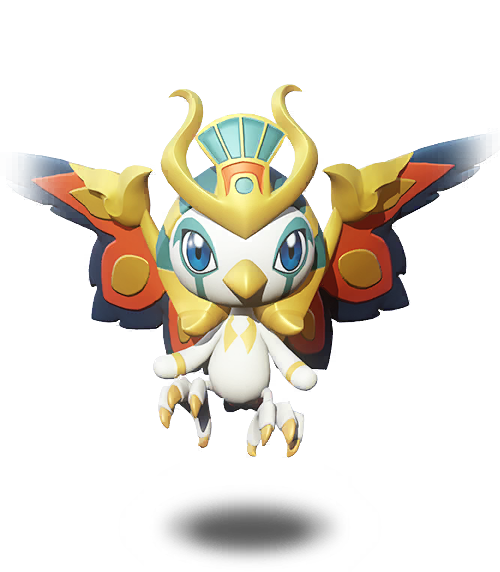
#3 Sunplume S
FogoDPSDPS Fire com passivo de crítico útil até quando não está no squad. Excelente peça de Fire e valor de coleção/conta.
Foco: crítico e ATK; protege na backline.
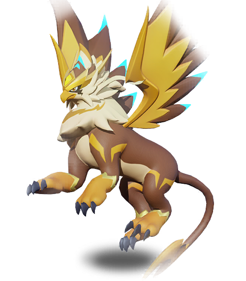
#4 Gryndarr A+
ElétricoDPS / AuroraAcelera ganho de Fúria e dá Crit Rate a aliados Elétricos. Seu teto cresce muito em uma composição Electric inteira e com Mega Gryphonarch.
Foco: Crit Rate, Fúria e sinergia Elétrica.
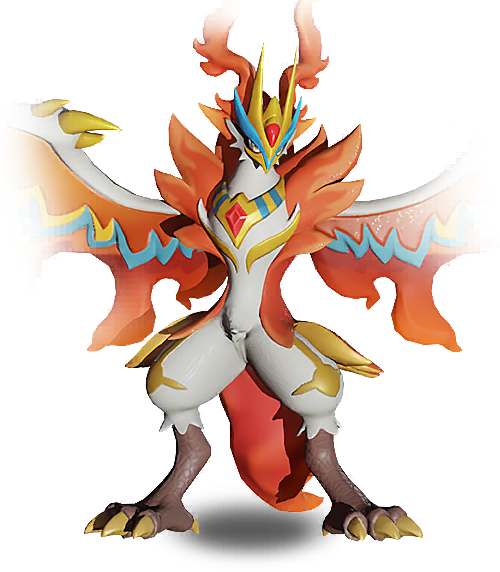
#5 Rapheni A / A+ Mega
Fogooff-tank / controleAtaca o alvo distante, empurra e atordoa; depois compartilha dano e cria escudo. Peça de frente para proteger carry, não um DPS puro.
Foco: sobrevivência + controle; perks de tank/bruiser.
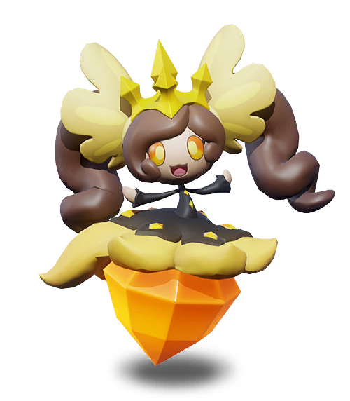
#6 Dialuna B+
Elétricopassivo / coleçãoTem valor de poder passivo e evolução, mas traz menos impacto imediato dentro do squad do que os cinco acima. Não deve roubar recurso do seu carry já montado.
Foco: coleção/poder global depois do core de combate.
Ordem de decisão: primeiro fortaleça um carry que você já usa; depois feche seu front; só então abra uma nova linha elemental. O erro caro é subir seis Palmons novos ao mesmo tempo.
Mega Evolution
O cliente 0.5.451 possui artes próprias para estas 12 evoluções. As cinco da linha S3 abaixo mudam diretamente o ranking atual; as demais ampliam opções de contas que já têm o Palmon-base investido.
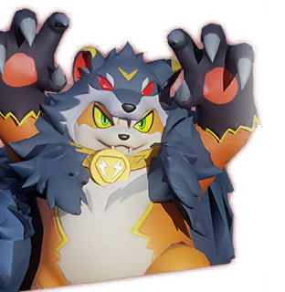
5001Mega existente no APK
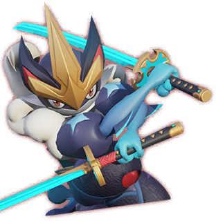
5002Mega existente no APK
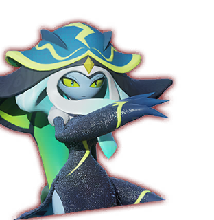
5004Mega existente no APK
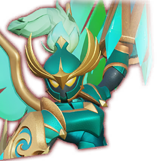
5005Mega existente no APK
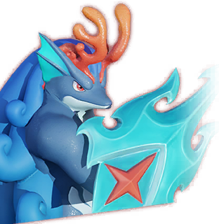
5006Mega existente no APK
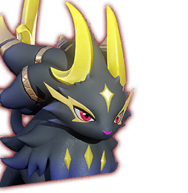
5007Mega existente no APK
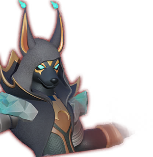
5008Mega existente no APK
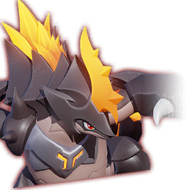
5011Mega existente no APK
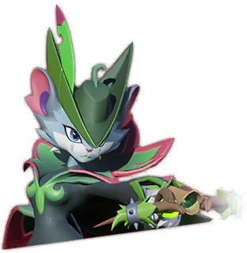
5012Mega existente no APK
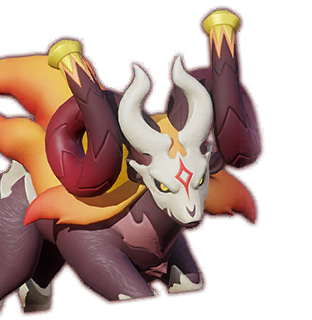
5017Mega existente no APK
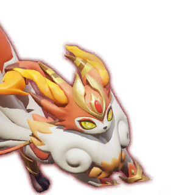
5021Mega existente no APK
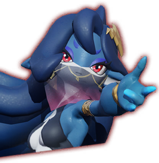
5027Mega existente no APK
| Base | Mega | Prioridade Conquest | Por quê |
|---|
| Sylphira | Abysphira | S+ | Maior impacto para carry Água. |
| Scorphelia | Scorphelias | S+ | Transforma Earth/toxin em núcleo de dano. |
| Gryndarr | Gryphonarch | A+ | Melhor escalada de Electric/Aurora. |
| Rapheni | Pyronyx | A+ | Front, escudo e controle mais fortes. |
| Dialuna | Dialunova | B+ | Valor mais passivo que impacto imediato de squad. |
Como jogar o Desert / Conquest
Esta season não é só uma troca de mapa. O avanço vem de território conectado, logística, Aura e tecnologia de deserto; força bruta sem rota e recursos perde ritmo.
1Capture território conectado e priorize Palmite Mines.2Mantenha Camel Post transportando Desert Relics; ele melhora AP e carga.3Suba Desert Resistance, território e skill elemental antes de gastar recurso disperso.
Pharaoh Coinsupgrade dos prédios de season.Desert RelicsDesert Tech e logística.PalmitePalmon Aura; raridades azul, roxa, laranja e vermelha.
Zonas: verde é segura, laranja avisa, vermelha é hostil; elas encolhem. Sempre confirme se a rota está conectada à sua guild/território antes de gastar AP.
O que fazer agora
| Quando | Ação | Evite |
|---|
| Hoje | Defina um carry principal e compare sua composição com os novos Palmons antes de abrir recursos de evolução. | Trocar todo o elenco por novidade sem estrelas, skills e perks. |
| Diário | Território conectado, Palmite, Camel ativo e tarefas de Desert. | Deixar AP/carga parados ou tentar atravessar zona hostil sem rota. |
| Semanal | Guardar material para o próximo marco real de evolução/skill e coordenar com a guild em Conquest/Pyramid. | Diluir recursos entre vários Mega projetos. |
Fontes e confiança
O inventário de sistemas, IDs e artes vem do XAPK local 0.5.451. O tier atual é uma recomendação de comunidade cruzada com habilidades publicadas: AllClash, posts espelhados da conta oficial em Palmon Survival e o guia S3 de LDShop. Valores internos de dano/custo que não foram decodificados não são inventados nesta página.